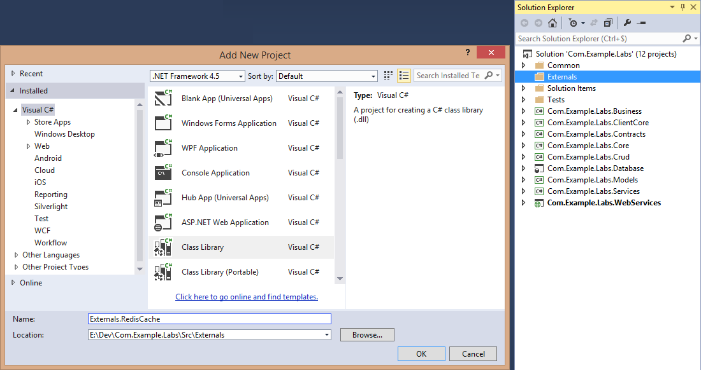
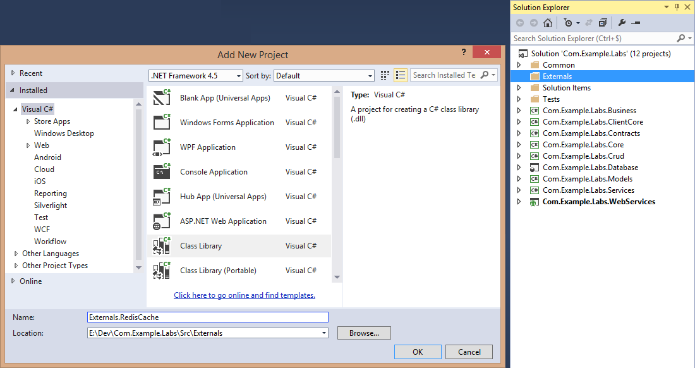
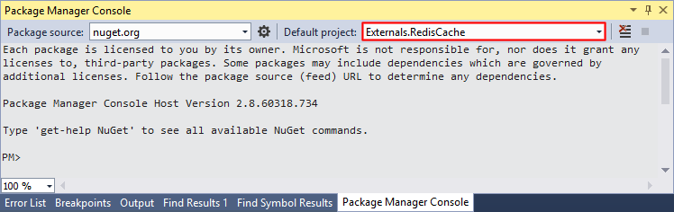
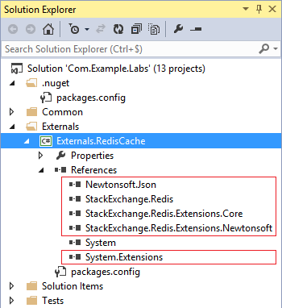

1. Externals.RedisCache Library
First add a new Class Library project to the solution (choose the name you wish)
Then add a reference to the System.Extensions project

By default CacheServiceHelper.Current singleton uses LocalMemoryCacheService implementation.
This HowTo explains how to use a Redis implementation (at server-side through configuration file) instead of LocalMemoryCacheService one.
Redis is a data structure server. It is open-source, networked, in-memory, and stores keys with optional durability. According to the monthly ranking by DB-Engines.com, Redis is the most popular key-value database. The name Redis means REmote DIctionary Server -- Wikipedia
This documentation is based on StackExchange.Redis.Extensions.
First add a new Class Library project to the solution (choose the name you wish)
Then add a reference to the System.Extensions project
Open Tools > NuGet Package Manager > Package Manager Console and select the project
Install Redis 64bits (currently v2.8.19)
PM> Install-Package Redis-64
Install the StackExchange.Redis.Extensions package (all required dependencies will be installed too)
PM> Install-Package StackExchange.Redis.Extensions.Newtonsoft
Result
Add the new CacheService class in the project
// ----------------------------------------------- // This file is part of the LayerCake Generator. // // Copyright (c) 2012, 2015 LayerCake Generator. // http://www.layercake-generator.net // ----------------------------------------------- namespace Externals.RedisCache { using StackExchange.Redis.Extensions.Core; using StackExchange.Redis.Extensions.Newtonsoft; using System; using System.Collections.Generic; using System.Linq; using System.Threading.Tasks; /// <summary> /// A Redis implementation (System.ICacheService implementation). /// Redis-64 v2.8.19, StackExchange.Redis v1.0.450, StackExchange.Redis.Extensions.Core v1.1.10.0, StackExchange.Redis.Extensions.Newtonsoft v1.1.7.0. /// </summary> public class CacheService : ICacheService { #region [ Members ] private static readonly StackExchangeRedisCacheClient _cacheClient = null; private static readonly ICacheStatistics _statistics = null; #endregion #region [ Constructors ] static CacheService() { _cacheClient = new StackExchangeRedisCacheClient(new NewtonsoftSerializer()); _statistics = new CacheStatistics(); } /// <summary> /// Initializes a new instance of the RedisCacheService class. /// </summary> public CacheService() { } /// <summary> /// Destructor. /// </summary> ~CacheService() { this.Dispose(false); } #endregion #region [ ICacheService Implementation ] #region [ Synchronous Methods ] /// <summary> /// Adds a CacheItem object to the cache. If the key already exists, the cache is updated with the new data. /// </summary> /// /// <param name="cacheItem"> /// CacheItem object. /// </param> public bool Add(CacheItem cacheItem) { // RedisServerException: 'ERR invalid expire time in setex' // -> the expiration value has a bad value return _cacheClient.Add(cacheItem.Key, cacheItem.Data, cacheItem.Expiration); } /// <summary> /// Adds a new object to the cache with expiration TimeSpan. /// If the key already exists, the cache is updated with the new data. /// </summary> /// /// <param name="key"> /// Unique key. /// </param> /// /// <param name="data"> /// Object to add to the cache. /// </param> /// /// <param name="timeSpan"> /// Expiration TimeSpan. /// </param> public bool Add(string key, object data, TimeSpan timeSpan) { // RedisServerException: 'ERR invalid expire time in setex' // -> the expiration value is out of range return _cacheClient.Add(key, data, timeSpan); } /// <summary> /// Gets an object from the cache given its unique key. /// </summary> /// /// <typeparam name="T"> /// The type of the retrieved object. /// </typeparam> /// /// <param name="key"> /// Unique key. /// </param> /// /// <returns> /// The retrieved object. If not found returns null. /// </returns> public T Get<T>(string key) where T : class { ((CacheStatistics)_statistics).IncrementRequestCount(); var data = _cacheClient.Get<T>(key); if (data == null) { ((CacheStatistics)_statistics).IncrementMissCount(); } else { ((CacheStatistics)_statistics).IncrementHitCount(); } return data; } /// <summary> /// Gets an object from the cache given its unique key. /// </summary> /// /// <typeparam name="T"> /// The type of the retrieved object. /// </typeparam> /// /// <param name="key"> /// Unique key. /// </param> /// /// <param name="whenNull"> /// Function to execute when the key is not present in the cache. /// </param> /// /// <param name="expiration"> /// Expiration DateTime. /// </param> /// /// <returns> /// The retrieved object. If not found returns null. /// </returns> public T Get<T>(string key, Func<T> whenNull, DateTime expiration) where T : class { var item = this.Get<T>(key); if (item == null) { item = whenNull(); if (item != null) { this.Add(new CacheItem { Key = key, Data = item, Expiration = expiration }); } } return item; } /// <summary> /// Gets an object from the cache given its unique key. /// </summary> /// /// <typeparam name="T"> /// The type of the retrieved object. /// </typeparam> /// /// <param name="key"> /// Unique key. /// </param> /// /// <param name="whenNull"> /// Function to execute when the key is not present in the cache. /// </param> /// /// <param name="expiration"> /// Expiration TimeSpan. /// </param> /// /// <returns> /// The retrieved object. If not found returns null. /// </returns> public T Get<T>(string key, Func<T> whenNull, TimeSpan expiration) where T : class { return this.Get<T>(key, whenNull, DateTime.Now.AddMilliseconds(expiration.TotalMilliseconds)); } /// <summary> /// Removes an object from the cache given its unique key. /// </summary> /// /// <param name="key"> /// Unique key. /// </param> /// /// <returns> /// True if the object has been removed from the cache; otherwise, false. /// </returns> public bool Remove(string key) { return _cacheClient.Remove(key); } /// <summary> /// Removes all the objects having the given tag value from the cache. /// </summary> /// /// <param name="tag"> /// Tag value. /// </param> /// /// <returns> /// The number of objects removed. /// </returns> public int RemoveByTag(string tag) { var keys = _cacheClient.SearchKeys(tag); _cacheClient.RemoveAll(keys); return keys.Count(); } #endregion #region [ Asynchronous Methods ] public async Task<bool> AddAsync(CacheItem cacheItem) { return await _cacheClient.AddAsync(cacheItem.Key, cacheItem.Data, cacheItem.Expiration); } public async Task<bool> AddAsync(string key, object data, TimeSpan timeSpan) { return await _cacheClient.AddAsync(key, data, timeSpan); } public async Task<T> GetAsync<T>(string key) where T : class { ((CacheStatistics)_statistics).IncrementRequestCount(); var data = await _cacheClient.GetAsync<T>(key); if (data == null) { ((CacheStatistics)_statistics).IncrementMissCount(); } else { ((CacheStatistics)_statistics).IncrementHitCount(); } return data; } public async Task<T> GetAsync<T>(string key, Func<T> whenNull, DateTime expiration) where T : class { var item = await _cacheClient.GetAsync<T>(key); if (item == null) { item = whenNull(); if (item != null) { await this.AddAsync(new CacheItem { Key = key, Data = item, Expiration = expiration }); } } return item; } public async Task<T> GetAsync<T>(string key, Func<T> whenNull, TimeSpan expiration) where T : class { return await this.GetAsync<T>(key, whenNull, DateTime.Now.AddMilliseconds(expiration.TotalMilliseconds)); } public async Task<bool> RemoveAsync(string key) { return await _cacheClient.RemoveAsync(key); } public async Task<int> RemoveByTagAsync(string tag) { return await _cacheClient.SearchKeysAsync(tag) .ContinueWith<int>(result => { _cacheClient.RemoveAllAsync(result.Result); return result.Result.Count(); }); } #endregion #region [ Properties ] /// <summary> /// Gets the cache statistics. /// </summary> public ICacheStatistics Statistics { get { var key = _cacheClient.GetInfo().Single(i => i.Value.StartsWith("keys=")).Value; var data = key.Split(',', '='); ((CacheStatistics)_statistics).ItemCount = TypeHelper.To<int>(data[1]); return _statistics; } } #endregion #endregion #region [ IDisposable Implementation ] private bool _isDisposed = false; /// <summary> /// Performs application-defined tasks associated with freeing, releasing, or resetting unmanaged resources. /// </summary> public void Dispose() { this.Dispose(true); GC.SuppressFinalize(this); } /// <summary> /// Performs application-defined tasks associated with freeing, releasing, or resetting unmanaged resources. /// </summary> /// /// <param name="disposing"> /// For internal use. /// </param> protected virtual void Dispose(bool disposing) { if (disposing) { if (!_isDisposed) { // Nothing because _cacheClient is a static instance _isDisposed = true; } } } #endregion } }
Edit the Web.config file (of the WebServices project and/or possible ASP.NET WebSite depending on your needs)
<?xml version="1.0" encoding="utf-8" ?> <configuration> <configSections> ... <!-- add this --> <section name="redisCacheClient" type="StackExchange.Redis.Extensions.Core.Configuration.RedisCachingSectionHandler, StackExchange.Redis.Extensions.Core" /> </configSections> <serviceLocatorConfiguration> <instances> ... <!-- edit this --> <instance interface="System.ICacheService, System.Extensions" implementation="Externals.RedisCache.CacheService, Externals.RedisCache" instancingMode="Singleton"/> </instances> </serviceLocatorConfiguration> <!-- add this --> <redisCacheClient allowAdmin="true" ssl="false" connectTimeout="5000" database="0"> <hosts> <add host="127.0.0.1" cachePort="6379"/> </hosts> </redisCacheClient> </configuration>